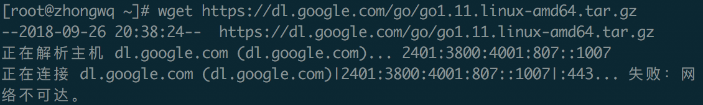
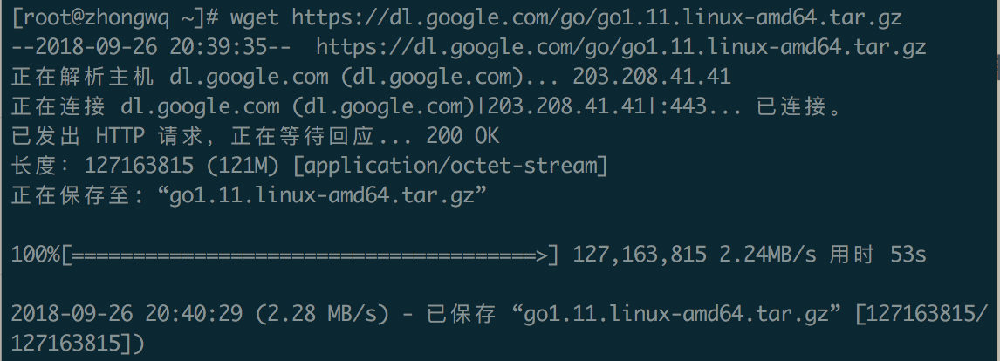

CentOS Go语言环境安装
安装Golang
使用yum包管理器如何安装golang在老师的博客里已经非常清晰了，Go开发环境安装这里我谈谈如何在官网下载安装包自己安装
首先，上官网找到我们需要的安装包，复制其下载地址，然后，wget把它下载下来
wget https://dl.google.com/go/go1.11.linux-amd64.tar.gz
这里不知道为什么我的centOS直接把这个网站解析成ipv6地址,使网络不可达  于是我在站长之家那里找到一个合适的ip，修改hosts文件，使得dl.google.com正常解析，之后就可以完成下载。 
下载完成后，解压文件
tar zxvf go1.8.linux-amd64.tar.gz -C /usr/local
新建我们的go项目根目录
mkdir $HOME/gowork
配置环境变量
vim /etc/profile # 添加如下内容 export GOROOT=/usr/local/go export GOBIN=$GOROOT/bin export PATH=$PATH:$GOBIN export GOPATH=$HOME/gowork # 完成后执行 source /etc/profile # 验证是否成功 go version go env
Git使用
首先肯定是要安装git了，以root权限运行
yum install git
然后我们安装go的一些工具
因为中国网络环境下无法访问Golang.org，不能运行go get golang.org/x/XX来获取Golang packages，所以我们把Github上的镜像的对应内容get下来，复制到golang.org文件夹对应的地方
# 创建文件夹 mkdir $GOPATH/src/golang.org/x/ # 下载源码 go get -d github.com/golang/tools # copy cp $GOPATH/src/github.com/golang/tools $GOPATH/src/golang.org/x/ -rf # 安装工具包 go install golang.org/x/tools/go/buildutil
以hello.go为例，说明Git在go中的使用
创建我们源代码的目录
# github-user改为你自己的用户名(下面的都是) mkdir $GOPATH/src/github.com/github-user/hello -p # 创建 hello.go touch hello.go
文件内容如下
package main import "fmt" func main() { fmt.Printf("hello, world\n") }
测试有无问题
$ go run hello.go
hello, world
$ go install github.com/github-user/hello # build
$ hello
hello-world
在Github上创建对应的新仓库, 本地源代码目录，绑定我们新仓库的命令如下
# 进入文件夹，创建Git仓库 git init # 把当前内容commit到Git仓库 git add --all git commit -m "XXX" # 添加远程仓库，完成github 对应的远程仓库的绑定 git remote add origin https://github.com/zhongwq/go-helloworld.git # 推送到远程仓库 git push -u origin master
这样我们就完成我们git本地仓库与github 对应的远程仓库的绑定了。